정보처리산업기사 (2006-09-10 기출문제)
1과목: 데이터 베이스
1. 데이터베이스 설계 순서를 바르게 나열한 것은?
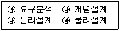
- ㉮→㉯→㉰→㉱
- ㉮→㉰→㉯→㉱
- ㉰→㉯→㉱→㉮
- ㉰→㉱→㉯→㉮
(정답률: 90%)

2. 데이터베이스관리시스템(DBMS)의 필수기능이 아닌 것은?
- 정의기능
- 조작기능
- 제어기능
- 설치기능
(정답률: 90%)
3. Which of the following is a position in the organization, responsible for the control of the database?
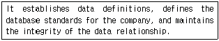
- Network Engineer
- Database Administrator
- End User
- Application Programmer
(정답률: 92%)
4. 뷰(view)에 대한 설명으로 옳지 않은 것은?
- 데이터베이스 일부만 선택적으로 보여주므로 데이터베이스의 접근을 제한할 수 있다.
- 복잡한 검색을 사용자는 간단하게 할 수 있다.
- 사용자에게 데이터의 독립성을 제공할 수 있다.
- 뷰는 별도의 디스크 공간을 차지하여 생성되는 실제적 테이블이다.
(정답률: 88%)
5. 관계 데이터 모델에서 하나의 애트리뷰트가 취할 수 있는 같은 타입의 원자(atomic) 값들의 집합을 무엇이라 하는가?
- 속성
- 스킴
- 도메인
- 제약조건
(정답률: 77%)
6. in computing, this is the process of rearranging an initially unordered sequence of records until they ordered. What is this?
- searching
- loading
- sorting
- compiling
(정답률: 69%)
7. 다음의 자료를 삽입(insert) 정렬 기법을 사용하여 오름차순으로 정렬할 경우 PASS 2의 결과는?
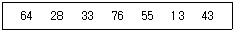
- 28 64 33 76 55 13 43
- 13 28 33 55 64 76 43
- 28 33 64 76 55 13 43
- 13 64 28 33 76 55 43
(정답률: 79%)
8. 현실 세계의 객체를 개념적으로 표현할 때 기본적으로 개체타입과 이들 간의 관계를 이용하도록 P. Chen이 제안한 데이터 모델은?
- 개체-관계 모델
- 계층형 데이터 모델
- 관계형 데이터 모델
- 네트워크형 데이터 모델
(정답률: 83%)
9. 정렬 알고리즘 선택 시 고려하여야 할 사항으로 거리가 먼 것은?
- 데이터의 양
- 초기 데이터의 배열상태
- 키 값들의 분포상태
- 운영체제의 종류
(정답률: 83%)
10. 관계형 데이터베이스에서 튜플의 수를 의미하는 것은?
- attribute
- degree
- cardinality
- integrity
(정답률: 75%)
11. 다음 SQL 문에서 DISTINCT의 의미는?
- 검색 결과에서 레코드의 중복을 제거하라.
- 모든 레코드를 검색하라.
- 검색 결과를 순서대로 정렬하라.
- DEPT의 처음 레코드만 검색하라.
(정답률: 81%)
12. 선형자료구조에 해당하지 않는 것은?
- 리스트(list)
- 큐(Queue)
- 데큐(deque)
- 그래프(graph)
(정답률: 88%)
13. 데이터 모델에 표시할 요소로 가장 타당한 것은?
- 개체, 속성, 관계
- 정의, 조작, 제어
- 구조, 연산, 제약조건
- 개체, 관계 구조
(정답률: 48%)
14. 데이터베이스 설계 단계 중 물리적 설계 단계에 해당하지 않는 것은?
- 저장 레코드 양식 설계
- 접근 경로 설계
- 레코드 집중의 분석 및 설계
- 트랜잭션 인터페이스 설계
(정답률: 64%)
15. 데이터베이스를 구성하는 데이터 객체, 이들의 성질, 이들 간에 존재하는 관계, 그리고 데이터의 조작 또는 이들 데이터 값들이 갖는 제약조건에 관한 정의를 총칭하는 용어는?
- 엔터티
- 애트리뷰트
- 스키마
- 인터페이스
(정답률: 68%)
16. 해상함수의 값을 구한 결과 키 K1, K2 가 같은 값을 가질 때 이들 키 K1, K2 의 집합을 무엇이라 하는가?
- Mapping
- Folding
- Synonym
- Chaining
(정답률: 79%)
17. 리스트의 한쪽 끝을 통하여 모든 원소의 삽입과 삭제가 일어나는 후입선출(Last-in First-out)의 자료 구조는?
- STACK
- QUEUE
- DEQUE
- TREE
(정답률: 72%)
18. 다음의 조건을 모두 만족하는 정규형은?
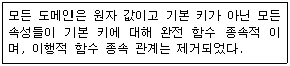
- 제 1정규형
- 제 2정규형
- 제 3정규형
- 제 1정규형과 제2정규형
(정답률: 74%)
19. 스택(STACK)의 응용 분야가 아닌 것은?
- 함수 호출
- 인터럽트 처리
- 작업 스케쥴링
- 수식 계산
(정답률: 69%)
20. 개체-관계 모델의 E-R 다이어그램에서 속성을 의미하는 그래픽 표현은?
- 사각형
- 타원
- 마름모
- 삼각형
(정답률: 79%)
2과목: 전자 계산기 구조
21. 고정소수점에서 음수를 표현하는 방법 중 거리가 먼 것은?
- 언팩(unpack) 형식의 십진법
- 부호와 1의 보수
- 부호와 2의 보수
- 부호와 절대치
(정답률: 67%)
22. 어떤 컴퓨터의 메모리 용량이 4K 워드이고, 워드 길이기 16비트일 때 AR(주소 레지스터)와 DR(데이터 레지스터)는 몇 비트로 구성하여야 하는가?
- AR : 4, DR : 16
- AR : 12, DR : 32
- AR : 16, DR : 65536
- AR : 12, DR : 16
(정답률: 50%)
23. 다수의 프로세서들이 독립적으로 서로 다른 명령어들과 프로그램을 수행하는 시스템 조직은?
- SISD
- SIMD
- MIMD
- MISO
(정답률: 53%)
24. 오류를 검출하여 교정까지 할 수 있는 Code는?
- Gray Code
- Excess-3 Code
- EBCDIC Code
- Hamming Code
(정답률: 86%)
25. 이항연산을 하는 연산자가 아닌 것은?
- Complement
- AND
- OR
- XOR
(정답률: 85%)
26. 다음 중 인터럽트 수행 후에 처리되는 것은?
- 전원을 다시 동작시킨다.
- 모니터 화면에 인터럽트 종류를 디스플레이 한다.
- 메모리의 내용을 지워서 다른 프로그램이 적재될 수 있도록 한다.
- 인터럽트 처리 시 보존시켰던PC 및 제어상태 데이터를 PC와 제어상태 레지스터에 복구한다.
(정답률: 81%)
27. 패리티 검사를 하는 이유로 적합한 것은?
- 전송된 부호의 오류를 검출하기 위하여
- 기억 장치의 여유도를 검사기 위하여
- 전송된 부호의 속도를 높이기 위하여
- 중계 전송로의 여유도를 검사하기 위하여
(정답률: 86%)
28. 명령 구성 형식 중 연산에 이용된 자료가 연산 후에도 기억장치에 그대로 보존되는 형식은?
- 1-주소 명령형식
- 2-주소 명령형식
- 3-주소 명령형식
- 0-주소 명령형식
(정답률: 49%)
29. 우선순위 인터럽트 중에서 소프트웨어적으로 우선순위가 높은 인터럽트를 알아내는 방식을 무엇이라고 하는가?
- 폴링(Polling)
- 데이지체인(daisy-chain)
- 병렬우선순위 인터럽트
- 직렬우선순위 인터럽트
(정답률: 72%)
30. 메모리 용량이 4096워드이고 1워드가 8비트라 할 때 PC(program counter)와 MBR(memory buffer register)의 비트 수를 올바르게 나타낸 것은?
- PC 8bit, MBR 12bit
- PC 12bit, MBR 8bit
- PC 8bit, MBR 8bit
- PC 12bit, MBR 12bit
(정답률: 69%)
31. 고정 소수점 방식으로 가산이나 감산을 하려고 한다. 가장 처음 수행되는 것은?(단, 큰 수는 A, 작은 수를 B라 가정)
- A와 B의 크기를 비교한다.
- A - B를 수행한다.
- B - A를 수행한다.
- 두 수의 부호를 판단한다.
(정답률: 60%)
32. 기억장치에서 명령어를 읽어 CPU로 가져오는 것을 무엇이라 하는가?
- Reference
- fetch
- Execute
- Major state
(정답률: 77%)
33. 10진수 +16925를 단정도 부동 소수점 표현 방식으로 올바른 것은?
- 지수부 = 16진수 44(부호 +), 소수부 = 3A4D(부호 +)
- 지수부 = 16진수 43(부호 +), 소수부 = 3A4B(부호 +)
- 지수부 = 16진수 42(부호 +), 소수부 = 3A4C(부호 +)
- 지수부 = 16진수 41(부호 +), 소수부 = 3A4E(부호 +)
(정답률: 32%)
34. 반도체 기억소자로서 이미 기억된 내용을 자외선을 이용하여 지우고 다시 사용할 수 있는 메모리 소자는?
- SRAM
- DRAM
- EPROM
- PROM
(정답률: 84%)
35. (101110. 1101)2를 10진수로 표현 하면?
- 22.8125
- 46.8125
- 2.28125
- 4.68125
(정답률: 80%)
36. 10진수 5를 1의 보수와 2의 보수로 각각 표시하면?
- 1의 보수 : 1010, 2의 보수 : 1011
- 1의 보수 : 1010, 2의 보수 : 1100
- 1의 보수 : 1011, 2의 보수 : 1001
- 1의 보수 : 1010, 2의 보수 : 1101
(정답률: 77%)
37. 산술 연산과 논리 연산 동작을 수행한 후 결과를 축적하는 레지스터(Register)를 무엇이라 하는가?
- 누산기
- 인덱스 레지스터
- 플래그 레지스터
- RAM
(정답률: 83%)
38. CPU의 명령어 사이클(instruction cycle) 4단계에 해당되지 않는 것은?
- Fetch Cycle
- Control Cycle
- indirect Cycle
- Execute Cycle
(정답률: 68%)
39. 연관(Associative) 기억장치의 구성요소로 볼 수 없는 것은?
- 검색 자료 레지스터
- 불일치 지시기
- q조 레지스터
- 마스크 레지스터
(정답률: 52%)
40. 메모리의 내용을 레지스터에 전달하는 기능을 무엇이라 하는가?
- Fetch
- Store
- Load
- Transfer
(정답률: 56%)
3과목: 시스템분석설계
41. 코드의 오류 발생 형태 중 좌우자리가 바뀌어 발생하는 에러는?
- transcription error
- transposition error
- omission error
- addition error
(정답률: 81%)
42. 아래와 같은 특징을 갖는 출력 매체 시스템은?
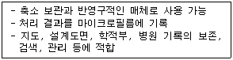
- CRT 출력 시스템
- COM 시스템
- X-Y 플로터
- 음성 출력 시스템
(정답률: 76%)
43. 시스템을 평가하는 목적으로 거리가 먼 것은?
- 시스템 운영관리의 타당성 파악
- 시스템의 성능과 유용도 판단
- 처리비용과 효율 면에서 개선점 파악
- 시스템 운영요원의 재훈련
(정답률: 87%)
44. 파일의 내용에 의한 분류 중 마스터 파일을 갱신 또는 조회하기 위하여 사용하는 것으로서, 일시적 성격을 지닌 정보를 기록하는 파일은?
- Source data File
- Transaction File
- History File
- Summary File
(정답률: 69%)
45. 시스템의 기본 요소와 거리가 먼 것은?
- 입력과 출력
- 처리
- 제어
- 상호의존
(정답률: 83%)
46. 입력된 자료가 처리되어 일단 출력된 후 이용자를 거쳐 다시 재입력되는 방식으로 공과금, 보험료 징수 등의 지로용지를 처리하는데 사용되는 입력방식은 무엇인가?
- 집중 매체화형 시스템
- 턴어라운드 시스템
- 분산 매체화형 시스템
- 직접 입력 시스템
(정답률: 74%)
47. 일반적으로 시스템(system)에 대한 정의는 여러 각도로 생각해 볼 수 있다.다음 중 적절하지 못한 것은?
- 공동의 목표를 달성하기 위하여 함께 작용하는 상호 관련된 요소들의 집합
- 예정된 기능을 협동해서 수행하도록 설계된 상호 작용 요소들의 유기적인 집합체
- 규칙적으로 상호 작용하거나 상호 의존적이며 단일 집합을 형성하는 항목들의 집합
- 추상적인 목표의 달성을 위하여 각 부분품들이 추상적인 동작을 수행하도록 하는 기능들의 집합체
(정답률: 69%)
48. DFD(data Flow Diagram)의 구성 요소가 아닌 것은?
- 자료흐름(data flow)
- 처리(process)
- 자료저장소(data store)
- 의사결정표(decision table)
(정답률: 68%)
49. 모듈의 독립성을 향상시키기 위한 방법은?
- 결합도는 약하고 응집도는 강해야 한다.
- 결합도는 강하고 응집도는 약해야 한다.
- 결합도와 응집도가 모두 강해야 한다.
- 결합도와 응집도가 모두 약해야 한다.
(정답률: 73%)
50. 동일한 파일 형식을 가지고 있는 두 개 이상의 파일을 하나로 정리하는 처리 패턴은?
- 갱신(update)
- 병합(merge)
- 대조(match)
- 정렬(sort)
(정답률: 84%)
51. 1 파일 설계 순서로 옳은 것은?
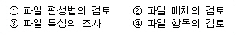
- ①→②→③→④
- ②→③→①→④
- ①→③→②→④
- ④→③→②→①
(정답률: 60%)
52. 다음 중 출력설계 순서에서 제일 먼저 설계해야 하는 것은?
- 출력정보의 분배에 관한 설계
- 출력정보의 내용에 관한 설계
- 출력정보의 매체에 관한 설계
- 출력정보의 이용에 관한 설계
(정답률: 62%)
53. 다음의 시스템 개발 단계 중 가장 마지막 단계에 수행하는 것은?
- 테스트와 디버깅
- 업무분석과 요구정의
- 프로그래밍
- 프로그램 설계
(정답률: 81%)
54. 구조적 프로그래밍 기법에 관한 설명으로 옳지 않은 것은?
- GOTO 명령을 사용하여 프로그램의 이해가 쉽다.
- 최초로 제창한 사람은 Dijkstra이다.
- 프로그램의 신뢰성과 생산성 향상을 기할 수 있다.
- 순차, 선택, 반복의 기본적 논리구조를 갖는다.
(정답률: 59%)
55. 하나 이상의 유사한 객체를 묶어서 하나의 공통된 특성을 표현한 것으로 데이터 추상화의 개념으로 볼 수 있는 것은?
- 클래스
- 메소드
- 객체
- 메시지
(정답률: 81%)
56. 코드 설계 순서로 옳은 것은?
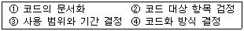
- ①→②→③→④
- ③→④→①→②
- ②→③→④→①
- ④→③→②→①
(정답률: 72%)
57. 문서화의 목적으로 거리가 먼 것은?
- 개발 후에 시스템 유지보수가 용이하다.
- 시스템의 보안성을 감화할 수 있다.
- 시스템 개발팀에서 운용팀으로 인계인수가 용이하다.
- 시스템 개발 중 추가 변경에 따른 혼란을 방지한다.
(정답률: 66%)
58. 객체의 특성으로 옳지 않은 것은?
- 상태와 행위를 가지고 있다.
- 식별성을 가진다.
- 객체들 간의 관계를 가진다.
- 일정한 기억 장소를 갖지 않는다.
(정답률: 79%)
59. 다음 예시와 같이 코드화 대상의 품목 명칭 일부를 약호 형태로 코드 속에 넣어 대상 항목을 쉽게 할 수 있는 코드는?
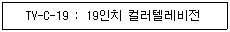
- 블록 코드(block code)
- 순차 코드(sequence code)
- 연상 코드(mnemonic code)
- 십진 분류 코드(decimal classification code)
(정답률: 81%)
60. HIPO 의 3단계 종류가 아닌 것은?
- 액션 다이어그램(Action Diagram)
- 도형 목차(Visual Table of Contents)
- 총괄 도표(Overview Diagram)
- 상세 도표(Detail Diagram)
(정답률: 64%)
4과목: 운영체제
61. 보안에 대한 설명 중 옳지 않은 것은?
- 외부보안은 불법 침입자나 천재지변으로부터 시스템을 보호하는 것이다.
- 내부보안은 하드웨어나 운영체제의 내장된 보안 기능을 통해 신뢰성을 유지하고 시스템을 보호하는 것이다.
- 외부보안은 시설보안과 운용보안으로 구분할 수 있다.
- 사용자 인터페이스 보안은 사용자의 신원을 운영체제가 확인하는 절차 없이 시스템 접근을 허용하는 것이다.
(정답률: 83%)
62. 운영체제(Operating System)에 대한 설명으로 거리가 먼 것은?
- 운영체제는 컴퓨터 하드웨어가 사용자 간의 매개체 역할을 하는 시스템 프로그램이다.
- 운영체제의 주목적은 컴퓨터 시스템을 편리하게 이용할 수 있게 하는데 있다.
- 운영체제는 컴퓨터 시스템을 공정하고 효율적으로 운영하기 위해 어떻게 자원을 할당할 것인가를 결정한다.
- 운영체제는 컴퓨터 시스템에 항상 존재해야 하며 컴파일러, 문서편집기, 데이터베이스 등의 프로그램을 반드시 포함하고 있어야한다.
(정답률: 76%)
63. 파일 구성에 따른 분류 중 해상 함수를 이용하여 레코드 키에 의한 주소 계산을 통해 접근할 수 있도록 구성한 파일은?
- 직접 파일
- 순차 파일
- 인덱스 파일
- 색인 순차 파일
(정답률: 47%)
64. Round- Robin 스케줄링(Scheduling) 방식에 대한 설명으로 옳지 않은 것은?
- 할당된 시간(Time Slice) 내에 작업이 끝나지 않으면 대기 큐의 맨 뒤로 그 작업을 배치한다.
- 시간 할당량이 작아질수록 문맥교환 과부하는 낮아진다.
- 시간 할당량이 충분히 크면FIFO 방식과 비슷하다.
- 적절한 응답시간이 보장되므로 시분할 시스템에 유용하다.
(정답률: 70%)
65. UNIX에서 시스템과 사용자 간의 인터페이스를 담당하며 사용자의 명령을 받아 명령을 수행하는 명령어 해석기는?
- lnode
- port
- kernel
- shell
(정답률: 70%)
66. 다음과 같은 특징을 갖는 디스크 스케줄링 정책은?
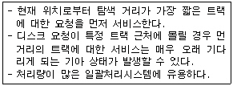
- SSTF
- FCFS
- C-SCAN
- SCAN
(정답률: 69%)
67. 주기억장치의 배치(Placement) 전략 종류가 아닌 것은?
- First - Fit
- Last - Fit
- Best - Fit
- Worst - Fit
(정답률: 78%)
68. 여러 개의 병렬 프로세스가 공통의 변수 또는 자원에 접근 할 때 그 조작을 정당하게 실행하기 위하여 접근 중인 임의의 시점에서 하나의 프로세스만이 그 접근을 허용하도록 제어하는 것을 무엇이라고 하는가?
- 상호 배제
- 페이징
- 세그먼테이션
- 다중 프로그래밍
(정답률: 71%)
69. 하나의 프로세스가 자주 창조하는 페이지들의 집합을 무엇이라 하는가?
- locality
- working set
- segment
- fragmentation
(정답률: 73%)
70. 파일 내용을 화면에 표시하는 UNIX 명령은?
- cp
- mv
- rm
- cat
(정답률: 75%)
71. 다음과 같이 트랙이 요청되어 큐에 순서적으로 도착 하였다. 모든 트랙을 서비스하기 위하여 디스크 스케줄링 기법 중 FCFS스케줄링 기법이 사용되었을 경우, 트랙 35는 요청된 트랙 중 몇 번째에 서비스를 받게 되는가? (단, 현재 헤드의 위치는 트랙 50이다.)
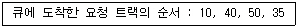
- 1번째
- 2번째
- 3번째
- 4번째
(정답률: 56%)
72. 4개의 페이지를 수용할 수 있는 주기억장치가 현재 완전히 비어 있으며, 어떤 프로세스가 다음과 같은 순서로 페이지번호를 요청했을 때 페이지 대체 정책으로 FIFO를 사용한다면 페이지 부재(Page-fault)의 발생 횟수는?
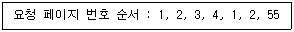
- 6회
- 5회
- 4회
- 3회
(정답률: 62%)
73. 운영체제의 목적으로 옳지 않은 것은?
- 신뢰성 향상
- 사용자 인터페이스 제공
- 처리량의 향상
- 응답시간 증가
(정답률: 84%)
74. 동시에 여러 개의 작업이 수행되는 다중프로그램이 시스템 또는 가상기억장치를 사용하는 시스템에서 하나의 프로세스가 작업수행 과정에서 수행하는 기억장치접근에서 지나치게 페이지 폴트가 발생하여 전체 시스템의 성능이 저하되는 것을 무엇이라고 하는가?
- spooling
- interleaving
- swapping
- thrashing
(정답률: 73%)
75. 하나의 프로세스가 CPU를 할당받아 실행하고 있을 때 우선순위가 높은 다른 프로세스가 CUP를 강제로 빼앗아 사용할 수 있는 선정형 스케줄링 기법의 종류에 해당하는 것은?
- FIFO
- SRT
- SJF
- HRN
(정답률: 54%)
76. 파일시스템의 기능으로 거리가 먼 것은?
- 여러 종류의 접근 제어 방법 제공
- 파일의 생성, 변경, 제거
- 네트워크 제어
- 파일의 무결성과 보안을 유지할 수 있는 방안 제공
(정답률: 78%)
77. 로더의 기능이 아닌 것은?
- 번역(compile)
- 할당(allocation)
- 링킹(linking)
- 재배치(relocation)
(정답률: 62%)
78. HRN 스케줄링에서 우선 순위 계산식은?
- (대기 시간 + 서비스 시간) / 대기 시간
- (대기 시간 + 서비스 시간) / 서비스 시간
- 대기 시간 / (대기 시간 + 서비스 시간)
- 서비스 시간 / (대시 기간 + 서비스 시간)
(정답률: 77%)
79. PCB(Process Control Block)의 내용이 아닌 것은?
- 프로세스의 현 상태
- 프로세스의 우선 순위
- 프로세스의 평균 페이지 부재율
- 프로세스의 고유 식별자
(정답률: 68%)
80. 컴퓨터시스템이 중앙 집중 형태에서 분산처리 시스템으로 발전하게 된 이유로 거리가 먼 것은?
- 자원 공유
- 연산 속도 향상
- 신뢰성 향상
- 보안기능 향상
(정답률: 68%)
5과목: 정보통신개론
81. 다음 중 패킷교환망의 특징으로 틀린 것은?
- 회선 교환망보다 회선 이용률이 좋다.
- 장애발생시 대체 경로 선택이 가능하다.
- 전송량 제어와 전송속도의 변환이 가능하다.
- 대량의 데이터 전송시 전송지연이 적어진다.
(정답률: 54%)
82. 다음 중 셀룰러 시스템의 특징과 관련 없는 것은?
- 가입자 용량을 극대화하기 위하여 주파수를 재사용한다.
- 통화 중인 가입자가 새로운 서비스 지역으로 진입할 때 통화의 단절 없이 계속 통화가 될 수 있게 한다.
- CDMA에서 셀 분할은 정적분할 방법만을 사용한다.
- 국가 간의 로밍도 가능하다.
(정답률: 59%)
83. 위상변조를 하는 동기식 변복조기의 신호 속도가 4800[Baud]이고 디비트(dibit)를 사용한다면 통신 속도는?
- 1200[bps]
- 2400[bps]
- 4800[bps]
- 9600[bps]
(정답률: 61%)
84. 기존의 설치된 전화의 동선케이블을 이용하여 고속 데이터 전송을 가능하게 하는 것은?
- HUB
- ADSL
- FAX
- WEB-PDA
(정답률: 69%)
85. OSI의 7계층 중 통신망의 연결을 수행하는 기능을 제공하며 ITU-T 권고 X.25 프로토콜의 대표적인 계층은?
- 응용 계층
- 프레젠테이션 계층
- 네트워크 계층
- 세션 계층
(정답률: 72%)
86. 다음 중 모뎀의 기능과 관련 없는 것은?
- 변조와 복조 기능
- 펄스를 전송신호로 변환
- 라우팅 기능
- 데이터 통신
(정답률: 60%)
87. 다음 중 뉴미디어의 분류에 속하지 않는 것은?
- 방송계 뉴미디어
- 통신계 뉴미디어
- 전파통신 뉴미디어
- 패키지계 뉴미디어
(정답률: 48%)
88. 프레임을 송신, 수신하는 스테이션을 구별하기 위해 사용되는 스테이션 식별자 필드는?
- 주소 필드
- 프레임 경사 필드
- 제어 필드
- 플래그 필드
(정답률: 32%)
89. 화상정보가 축적된 정보센터의 데이터페이스를 TV수신기와 공중전화망에 연결해서 이용자가 화면을 보면서 상호대화 형태로 각종 정보검색을 할 수 있는 뉴미디어는?
- Teletext
- Videotex
- HDTV
- CATV
(정답률: 62%)
90. 다음 중 베이스 밴드(base band) 전송방식이 사용되는 변조 방식은?
- 주파수편이 변조
- 위상편이 변조
- 펄스코드 변조
- 진폭편이 변조
(정답률: 41%)
91. OSI 창조모델의 7계층에 대한 것으로 틀린 것은?
- 물리계층 : 1계층
- 트랜스포트계층 : 6계층
- 응용계층 : 7계층
- 네트워크계층 : 3계층
(정답률: 71%)
92. 프로토콜방식 중 바이트 단위로 프레임을 구성하는 것은?
- BSC방식
- SDLC방식
- HDLC방식
- ITU-T 권고의 X.25
(정답률: 49%)
93. 다음 중 광통신에서 전송모드의 종류가 아닌 것은?
- 복합모드
- 계단형 다중모드
- 단일모드
- 언덕형 다중모드
(정답률: 25%)
94. OSI 참조모델 중 암호화, 코드변환 및 압축 등을 수행하는 계층은?
- 응용 계층
- 프레젠테이션계층
- 세션 계층
- 데이터링크 계층
(정답률: 58%)
95. TCP/IP 관련 응용 계층 프로토콜이 아닌 것은?
- FTP
- TELNET
- SMTP
- ISO
(정답률: 61%)
96. 시분할(Time-sharing)시스템과 가장 관계없는 것은?
- 실시간(real-time) 응답이 주로 요구된다.
- 컴퓨터와 이용자가 서로 대화형으로 정보를 교환한다.
- 컴퓨터 파일지원의 공동이용이 불가능하다.
- 다수 단말기가1대의 컴퓨터를 공동으로 사용한다.
(정답률: 72%)
97. 시논-하트레이(shannon Hartley)의 통신채널 용량은?
- c = B log2(1+S/N)
- c = B log2(1+N/S)
- c = 2B log2(1+S/N)
- c = 2B log2(1+N/S)
(정답률: 52%)
98. 다음과 같은 장점을 가지고 있는 전송매체는?
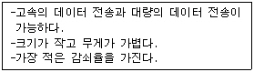
- 동축케이블(Coaxial cable)
- 꼬임선(Twisted pair cable)
- 스크린케이블(Screen cable)
- 광섬유케이블(Optical fiber cable)
(정답률: 83%)
99. 일단 통신경로가 설정되면 데이터의 형태, 부호, 전송제어 절차 등에 의한 제약을 받지 않는 교환방식은?
- 패킷교환방식
- 중계교환방식
- 광교환방식
- 회선교환방식
(정답률: 46%)
100. 다음 중 위성 통신의 다중접속 방법이 아닌 것은?
- 신호분할 다중접속
- 주파수분할 다중접속
- 시분할 다중접속
- 코드분할 다중접속
(정답률: 42%)
㉮ 단계에서는 요구사항 분석을 통해 데이터베이스의 목적과 범위를 파악하고, 필요한 데이터를 식별한다.
㉯ 단계에서는 데이터베이스의 개념적 설계를 수행한다. 개념적 설계는 업무 프로세스와 데이터를 분석하여 개념적 데이터 모델을 작성하는 과정이다.
㉰ 단계에서는 논리적 설계를 수행한다. 논리적 설계는 개념적 데이터 모델을 논리적 데이터 모델로 변환하는 과정이다.
마지막으로 ㉱ 단계에서는 물리적 설계를 수행한다. 물리적 설계는 논리적 데이터 모델을 물리적 데이터 모델로 변환하고, 데이터베이스 구조를 정의하는 과정이다.
따라서, 데이터베이스 설계 순서는 "㉮→㉯→㉰→㉱"이다.